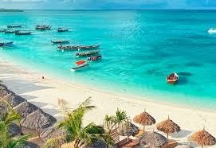

Zanzibar Island
Zanzibar is a Tanzanian archipelago off the coast of East Africa.
It is located in the Indian Ocean, and consists of many small islands
and two large ones: Unguja (the main island, referred to informally as Zanzibar)
and Pemba Island.
The capital is Zanzibar City, located on the island of Unguja.
Its historic centre, Stone Town, is a World Heritage Site.

The beauty of Zanzibar
Zanzibar is known for its stunning beaches and crystal-clear waters. It is also know as "Spice Island" beacause of its vibrant culture and rich history.
Beaches and Coastline
Zanzibar boasts pristine white sand beachesand crystal-clear waters, perfect for swimming,
snorkelling and watersports.

Spice Farms
Discover the island's "Spice Island" reputation
by visiting local spice farms and experiencing
the flavors of cinnamon, cloves, and other spices

Culture & History
Immerse yourself in the unique blend of African,
Indian, Arabian, and European cultures that
define Zanzibar.